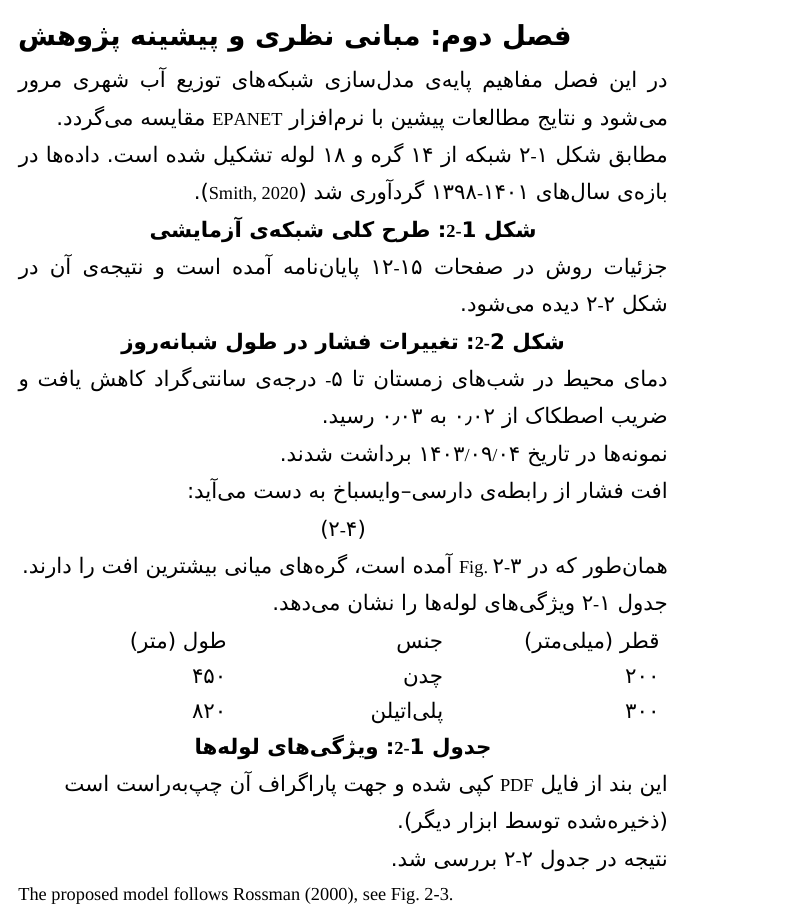
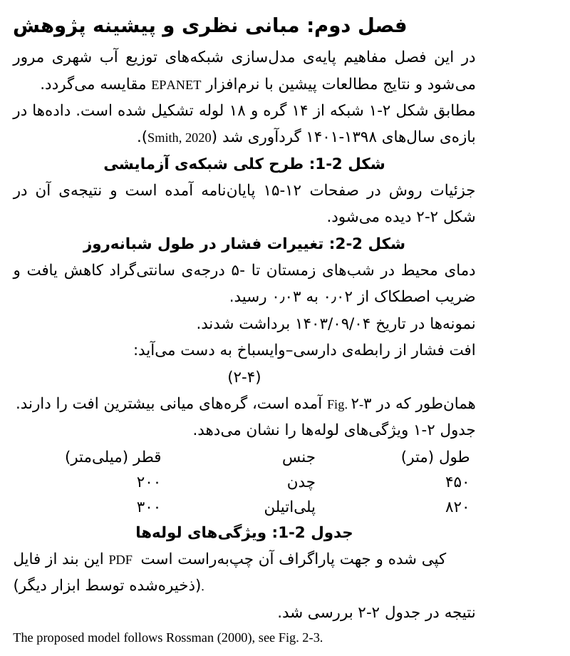

for Persian theses in Wordبرای پایاننامهٔ فارسی در ورد · v0.1.0
Typed ۲-۳.
Drawn ۳-۲?تایپشده ۲-۳.
دیدهشده ۳-۲؟
In a right-to-left page a hyphen between digits is a weak character: which number lands on the right depends on what surrounds it and on the program that draws it. vazhgun opens your .docx, runs the Unicode Bidirectional Algorithm on every paragraph, and lists where what you typed and what the reader sees differ, with the Word-side fix. --fix writes an explicit corrected copy.در صفحهٔ راستبهچپ خطتیره بین دو رقم نویسهٔ «ضعیف» است: اینکه کدام عدد سمت راست بیفتد به همسایههایش و به برنامهای که متن را رسم میکند بستگی دارد. واژگون فایل .docx را باز میکند، الگوریتم دوطرفهٔ یونیکد را روی هر پاراگراف اجرا میکند و جاهایی را که تایپشده با دیدهشده فرق دارد، با راهحل سمت ورد، فهرست میکند. --fix یک نسخهٔ اصلاحشدهٔ صریح مینویسد.
- Python 3.9+
- MIT
- 0 deps
- offline
- 27 tests
Live · the real algorithmزنده · الگوریتم واقعی
Paste a line. See the order it is drawn in.یک خط بگذارید. ترتیب دیدهشدنش را ببینید.
This runs a JavaScript port of vazhgun's UAX #9 and its chain and minus checks in your browser, offline. It reproduced the levels and drawn order of the Python engine on 3,000 random strings. The marks the page writes are the ones --fix writes. It is the standard's answer: Word can differ.این صفحه نسخهٔ جاوااسکریپت UAX #9 واژگون و بررسیهای زنجیره و منفی را در مرورگرتان اجرا میکند، بدون اینترنت. روی ۳٬۰۰۰ رشتهٔ تصادفی همان سطح و ترتیب نمایش موتور پایتون را داد. نشانههایی که صفحه مینویسد همانهایی است که --fix مینویسد. این پاسخ استاندارد است؛ ورد ممکن است فرق کند.
The traceمسیر الگوریتم
Why «۲-۳» becomes «۳-۲»: six steps.چرا «۲-۳» «۳-۲» میشود: شش گام.
- 1
Bidi classesکلاسهای دوطرفه
Every character has a class in the Unicode database. The Persian letters are AL, the digits ۲ ۳ are EN, the hyphen is ES, the space is WS.هر نویسه در پایگاه یونیکد یک کلاس دارد. حروف فارسی AL، رقمهای ۲ و ۳ EN، خطتیره ES و فاصله WS است.
- 2
W2 · after an Arabic letterW2 · پس از حرف عربی
Rule W2: a European number that follows an Arabic letter becomes an Arabic number (AN). This is the step that separates «شکل ۲-۳» from «Fig. ۲-۳»: after Latin letters nothing changes here.قاعدهٔ W2: عدد اروپایی پس از حرف عربی «عدد عربی» (AN) میشود. همین گام «شکل ۲-۳» را از «Fig. ۲-۳» جدا میکند: پس از حرف لاتین اینجا چیزی عوض نمیشود.
- 3
W4–W7 · the hyphenW4 تا W7 · خطتیره
Between two European numbers a hyphen would join them into one number (W4). Between two Arabic numbers it does not: it falls back to neutral. After Latin letters W7 turns the numbers into plain L.بین دو عدد اروپایی خطتیره آنها را یک عدد میکند (W4). بین دو عدد عربی نه: خنثی میماند. پس از حرف لاتین W7 عددها را L ساده میکند.
- 4
N1–N2 · neutralsN1 و N2 · خنثیها
A neutral between two strong characters of the same direction takes that direction. AN counts as right-to-left, so the hyphen and the space turn R. After Latin letters they turn L.خنثی میان دو نویسهٔ قوی همجهت همان جهت را میگیرد. AN راستبهچپ حساب میشود، پس خطتیره و فاصله R میشوند. پس از حرف لاتین L میشوند.
- 5
I1–I2 · levelsI1 و I2 · سطحها
In a right-to-left paragraph R is level 1 and numbers are level 2; L is level 2. The small digit under each chip is its level.در پاراگراف راستبهچپ R سطح ۱ و عددها سطح ۲ است؛ L سطح ۲. عدد کوچک زیر هر مهره سطح آن است.
- 6
L2 · reorderL2 · چیدن
From the highest level down to 1, reverse every run at that level or above. Watch the chips slide. Read the first number's side below, then press the other sample.از بالاترین سطح تا ۱، هر رشتهٔ همسطح یا بالاتر وارونه میشود. لغزیدن مهرهها را ببینید. سمت عدد اول را زیر ببینید، بعد نمونهٔ دیگر را بزنید.
Demoنمایش
What it prints for a thesis chapter.برای یک فصل پایاننامه چه چاپ میکند.
vazhgun 0.1.0 · chapter2.docx · 25 paragraphs (19 Persian), 1 tables
✗ V101 Persian text in a left-to-right paragraph [¶23 · Normal]
typed: این بند از فایل PDF کپی شده و جهت پاراگراف آن چپبهراست است (ذخیرهشده توسط ابزار دیگر).
drawn: این بند از فایل PDF کپی شده و جهت پاراگراف آن چپبهراست است (ذخیرهشده توسط ابزار دیگر). (approximate; runs listed left to right)
why : Word draws the paragraph's base direction from its own setting (w:bidi), not from the language. In a left-to-right paragraph punctuation and brackets at the ends of a Persian sentence jump to the wrong side and number order flips.
fix : Select the paragraph and press Ctrl+Right Shift (right-to-left), or set the style to right-to-left. `--fix` adds w:bidi.
✗ V104 Invisible bidi control characters (override/unbalanced) [¶24 · Normal]
text : …یجه در جدول ۲-۲ بررسی شد.⟨RLE⟩
why : 1 embedding/override/isolate character(s) found (RL Embedding). They are typically pasted in from PDFs or web pages; overrides force the visual order and an unclosed one leaks into the following text. Word only inserts them through its «Insert Unicode control character» menu. vazhgun cannot preview this paragraph (explicit controls are outside its scope).
fix : Retype the passage, or run `--fix --strip-controls` to delete them (review the result: removing an embedding changes the drawing).
! V203 Sign «-» is drawn after its number [¶7 · Normal]
typed: در شبهای زمستان تا -۵ درجهی سان
drawn: درجهی سان۵در شبهای زمستان تا - (approximate; runs listed left to right)
why : In a right-to-left paragraph a hyphen or plus in front of a digit is a weak character that goes with the Persian text around it, so it is drawn on the right of the number: -۵ looks like ۵-.
fix : Put a left-to-right mark (U+200E) before the sign, or use the real minus U+2212 with it. `--fix` inserts the mark.
! V202 Inconsistent drawing of caption / chapter-style numbers (شکل ۲-۳, (۲-۴)) [¶10 · Normal]
typed: (۲-۴)
drawn: )۲-۴( (approximate; runs listed left to right)
why : 2 of these are drawn left-to-right (first number on the left) and 6 right-to-left (first number on the right) in this document, so the same kind of number appears as ۲-۳ in one place and ۳-۲ in another. This is one of the 2 drawn left-to-right.
fix : Pick one convention for the whole thesis and apply it: `--fix --chains reading` (first number on the right, RLM after the separator) or `--fix --chains ltr` (first number on the left).
! V202 Inconsistent drawing of caption / chapter-style numbers (شکل ۲-۳, (۲-۴)) [¶11 · Normal]
typed: که در Fig. ۲-۳ آمده
drawn: آمده Fig. ۲-۳ که در (approximate; runs listed left to right)
why : 2 of these are drawn left-to-right (first number on the left) and 6 right-to-left (first number on the right) in this document, so the same kind of number appears as ۲-۳ in one place and ۳-۲ in another. This is one of the 2 drawn left-to-right.
fix : Pick one convention for the whole thesis and apply it: `--fix --chains reading` (first number on the right, RLM after the separator) or `--fix --chains ltr` (first number on the left).
! V103 Persian table laid out left-to-right [table 1 (3×3)]
text : قطر (میلیمتر)
why : Without the table property «right-to-left» (w:bidiVisual) the first column is drawn at the LEFT edge, so the columns of a Persian table read backwards.
fix : Select the table → Table Properties → Table → Alignment, or Layout → Table Direction → Right-to-Left. `--fix` adds w:bidiVisual.
…Show the full, unedited outputنمایش خروجی کامل و بدون ویرایش
vazhgun 0.1.0 · chapter2.docx · 25 paragraphs (19 Persian), 1 tables
✗ V101 Persian text in a left-to-right paragraph [¶23 · Normal]
typed: این بند از فایل PDF کپی شده و جهت پاراگراف آن چپبهراست است (ذخیرهشده توسط ابزار دیگر).
drawn: این بند از فایل PDF کپی شده و جهت پاراگراف آن چپبهراست است (ذخیرهشده توسط ابزار دیگر). (approximate; runs listed left to right)
why : Word draws the paragraph's base direction from its own setting (w:bidi), not from the language. In a left-to-right paragraph punctuation and brackets at the ends of a Persian sentence jump to the wrong side and number order flips.
fix : Select the paragraph and press Ctrl+Right Shift (right-to-left), or set the style to right-to-left. `--fix` adds w:bidi.
✗ V104 Invisible bidi control characters (override/unbalanced) [¶24 · Normal]
text : …یجه در جدول ۲-۲ بررسی شد.⟨RLE⟩
why : 1 embedding/override/isolate character(s) found (RL Embedding). They are typically pasted in from PDFs or web pages; overrides force the visual order and an unclosed one leaks into the following text. Word only inserts them through its «Insert Unicode control character» menu. vazhgun cannot preview this paragraph (explicit controls are outside its scope).
fix : Retype the passage, or run `--fix --strip-controls` to delete them (review the result: removing an embedding changes the drawing).
! V203 Sign «-» is drawn after its number [¶7 · Normal]
typed: در شبهای زمستان تا -۵ درجهی سان
drawn: درجهی سان۵در شبهای زمستان تا - (approximate; runs listed left to right)
why : In a right-to-left paragraph a hyphen or plus in front of a digit is a weak character that goes with the Persian text around it, so it is drawn on the right of the number: -۵ looks like ۵-.
fix : Put a left-to-right mark (U+200E) before the sign, or use the real minus U+2212 with it. `--fix` inserts the mark.
! V202 Inconsistent drawing of caption / chapter-style numbers (شکل ۲-۳, (۲-۴)) [¶10 · Normal]
typed: (۲-۴)
drawn: )۲-۴( (approximate; runs listed left to right)
why : 2 of these are drawn left-to-right (first number on the left) and 6 right-to-left (first number on the right) in this document, so the same kind of number appears as ۲-۳ in one place and ۳-۲ in another. This is one of the 2 drawn left-to-right.
fix : Pick one convention for the whole thesis and apply it: `--fix --chains reading` (first number on the right, RLM after the separator) or `--fix --chains ltr` (first number on the left).
! V202 Inconsistent drawing of caption / chapter-style numbers (شکل ۲-۳, (۲-۴)) [¶11 · Normal]
typed: که در Fig. ۲-۳ آمده
drawn: آمده Fig. ۲-۳ که در (approximate; runs listed left to right)
why : 2 of these are drawn left-to-right (first number on the left) and 6 right-to-left (first number on the right) in this document, so the same kind of number appears as ۲-۳ in one place and ۳-۲ in another. This is one of the 2 drawn left-to-right.
fix : Pick one convention for the whole thesis and apply it: `--fix --chains reading` (first number on the right, RLM after the separator) or `--fix --chains ltr` (first number on the left).
! V103 Persian table laid out left-to-right [table 1 (3×3)]
text : قطر (میلیمتر)
why : Without the table property «right-to-left» (w:bidiVisual) the first column is drawn at the LEFT edge, so the columns of a Persian table read backwards.
fix : Select the table → Table Properties → Table → Alignment, or Layout → Table Direction → Right-to-Left. `--fix` adds w:bidiVisual.
· V201 Number order rests on the renderer: year ranges (۱۳۹۸-۱۳۹۹) [¶3 · Normal]
typed: هی سالهای ۱۳۹۸-۱۴۰۱ گردآو
drawn: گردآو۱۴۰۱-۱۳۹۸هی سالهای (approximate; runs listed left to right)
why : Typed «۱۳۹۸-۱۴۰۱»; by the Unicode algorithm it is drawn right-to-left here (first number on the RIGHT, reading order). How a number with a hyphen or slash is drawn depends on what comes before it (Persian letters, Latin letters, start of the line, a bracket) and can differ between Word versions, LibreOffice, Google Docs and PDF export (a published Persian-Word note reports a slash date shown day-first in Word although the Unicode algorithm draws it left-to-right). Consistent here, but not explicit.
fix : Optional: `--fix --chains ltr` (LRM around the chain: first number on the left) or `--chains reading` (RLM after each separator: first number on the right).
· V201 Number order rests on the renderer: page ranges (صفحات ۱۲-۱۵) [¶5 · Normal]
typed: وش در صفحات ۱۲-۱۵ پایان
drawn: پایان۱۵-۱۲وش در صفحات (approximate; runs listed left to right)
why : Typed «۱۲-۱۵»; by the Unicode algorithm it is drawn right-to-left here (first number on the RIGHT, reading order). How a number with a hyphen or slash is drawn depends on what comes before it (Persian letters, Latin letters, start of the line, a bracket) and can differ between Word versions, LibreOffice, Google Docs and PDF export (a published Persian-Word note reports a slash date shown day-first in Word although the Unicode algorithm draws it left-to-right). Consistent here, but not explicit.
fix : Optional: `--fix --chains ltr` (LRM around the chain: first number on the left) or `--chains reading` (RLM after each separator: first number on the right).
· V201 Number order rests on the renderer: dates (۱۴۰۳/۰۹/۰۴) [¶8 · Normal]
typed: ها در تاریخ ۱۴۰۳/۰۹/۰۴ برداش
drawn: برداش۱۴۰۳/۰۹/۰۴ها در تاریخ (approximate; runs listed left to right)
why : Typed «۱۴۰۳/۰۹/۰۴»; by the Unicode algorithm it is drawn left-to-right here (first number on the LEFT). How a number with a hyphen or slash is drawn depends on what comes before it (Persian letters, Latin letters, start of the line, a bracket) and can differ between Word versions, LibreOffice, Google Docs and PDF export (a published Persian-Word note reports a slash date shown day-first in Word although the Unicode algorithm draws it left-to-right). Consistent here, but not explicit.
fix : Optional: `--fix --chains ltr` (LRM around the chain: first number on the left) or `--chains reading` (RLM after each separator: first number on the right).
2 error(s), 4 warning(s), 3 note(s); 9 fixable with --fix.
The drawn lines follow the Unicode Bidirectional Algorithm; Word/LibreOffice/Google Docs can differ slightly. Open the file to confirm.Output of the offline vazhgun --demo, which generates a synthetic chapter. Persian lines are wrapped in invisible isolate marks so they print the same in any terminal; «drawn» lists the runs left to right.خروجی vazhgun --demo که آفلاین یک فصل ساختگی میسازد. خطوط فارسی در نویسههای نامرئی ایزوله قرار گرفتهاند تا در هر ترمینال یکسان چاپ شوند؛ «drawn» قطعهها را از چپ به راست فهرست میکند.
The same chapter, before and after --fixهمان فصل، پیش و پس از --fix


Rendered by LibreOffice 25.2 on Linux with fallback fonts, not by Word. In the left (before) image the page range reads ۱۵-۱۲ and -۵ is drawn ۵-; after, they read ۱۲-۱۵ and -۵.رندر LibreOffice 25.2 روی لینوکس با فونتهای جایگزین، نه Word. در تصویر قبل از اصلاح بازهٔ صفحه ۱۵-۱۲ و «-۵» به شکل ۵- دیده میشود؛ بعد از اصلاح ۱۲-۱۵ و -۵.
What it doesچه میکند
What it does, precisely.دقیقاً چه میکند.
- 01
A real bidi engineموتور واقعی دوطرفه
UAX #9 runs on every paragraph and the drawn order is printed next to the typed text. Checked against libfribidi (identical levels on 40,000 random strings) and python-bidi.الگوریتم UAX #9 روی هر پاراگراف اجرا میشود و ترتیب دیدهشده کنار متن تایپشده چاپ میشود. با libfribidi (۴۰٬۰۰۰ رشتهٔ تصادفی با سطح یکسان) و python-bidi سنجیده شده.
- 02
Number chainsزنجیرههای عددی
Page ranges, year ranges, dates and caption numbers: V201 says the order rests on the renderer, V202 flags the same kind of chain drawn two ways in one thesis.بازهٔ صفحه و سال، تاریخ و شمارهٔ شکل و جدول: V201 میگوید ترتیب به نمایشگر بستگی دارد، V202 زنجیرهای را که در یک پایاننامه دو جور دیده میشود علامت میزند.
- 03
The jumping minusمنفیِ پرنده
V203: «-۵» drawn as «۵-» because the sign joins the Persian text around it. The fix is one left-to-right mark.V203: «-۵» که به شکل «۵-» دیده میشود چون علامت به متن فارسی اطرافش میچسبد. راهحل یک نشانهٔ چپبهراست است.
- 04
Paragraph and table directionجهت پاراگراف و جدول
Persian text in a left-to-right paragraph, tables without bidiVisual (columns read backwards), read through styles and docDefaults.متن فارسی در پاراگراف چپبهراست و جدول بدون bidiVisual (ستونها وارونه خوانده میشوند)، با خواندن استایلها و docDefaults.
- 05
Invisible controls from PDFsنویسههای نامرئی از PDF
Embedding, override and isolate characters pasted from PDFs are listed; unbalanced ones are errors. --strip-controls removes them.نویسههای embedding و override و isolate که از PDF چسبیدهاند فهرست میشوند؛ نامتوازنها خطا هستند. --strip-controls حذفشان میکند.
- 06
A fix that is a copyاصلاحی که یک نسخه است
--fix edits only w:t text and the bidi properties, leaves every other part of the file byte-identical, and refuses to write if the paragraph count differs. Your file is never touched.--fix فقط متن w:t و ویژگیهای bidi را عوض میکند، بقیهٔ فایل بایتبهبایت یکی میماند و اگر شمار پاراگرافها نخواند نمینویسد. فایل اصلی دست نمیخورد.
Install & quick startنصب و شروع سریع
Up and running in a minute.در یک دقیقه راه بیندازید.
Install (Python 3.9+, no dependencies)نصب (پایتون ۳٫۹ به بالا، بدون وابستگی)
pipx install git+https://github.com/mrzroot/vazhgun # or run without installing: uvx --from git+https://github.com/mrzroot/vazhgun vazhgun --demoAudit your chapterبررسی فصل
vazhgun thesis.docx vazhgun thesis.docx --json # machine-readable, includes the drawn segments vazhgun thesis.docx --strict # exit 1 on warnings tooWrite a corrected copyنوشتن نسخهٔ اصلاحشده
vazhgun thesis.docx --fix --chains ltr # thesis.vazhgun.docx; first number on the LEFT vazhgun thesis.docx --fix --chains reading # first number on the RIGHT vazhgun thesis.docx --fix --strip-controls
How it worksچطور کار میکند
Four steps, no magic.چهار گام، بدون جادو.
Read the fileخواندن فایل
Opens the .docx as a zip, reads document, styles and numbering, and resolves each paragraph's base direction through the style chain and docDefaults.فایل .docx را بهصورت zip باز میکند، سند و استایلها را میخواند و جهت پایهٔ هر پاراگراف را از زنجیرهٔ استایل و docDefaults درمیآورد.
Run UAX #9اجرای UAX #9
Computes embedding levels and the visual order of each paragraph with a self-written implementation, tested against libfribidi.سطحهای embedding و ترتیب دیداری هر پاراگراف را با پیادهسازی خودش حساب میکند که با libfribidi آزموده شده.
Find chains and trapsیافتن زنجیرهها و تلهها
Locates number chains, signs before digits, control characters and direction mismatches, and compares how the same kind of chain is drawn across the document.زنجیرههای عددی، علامت پیش از رقم، نویسههای کنترلی و ناهماهنگی جهت را پیدا میکند و میسنجد یک نوع زنجیره در سراسر سند چگونه دیده میشود.
Report, optionally fixگزارش و در صورت لزوم اصلاح
Prints typed and drawn views, the reason and the fix. With --fix it writes the copy.نمای تایپشده و دیدهشده، دلیل و راهحل را چاپ میکند. با --fix نسخه را مینویسد.
Honest limitsمحدودیتهای صادقانه
What it does not do. Please read.چه کارهایی نمیکند. لطفاً بخوانید.
- It is not Word. «Drawn» is UAX #9 as implemented here; Word, LibreOffice, Google Docs and PDF export can differ. I rendered the demo in LibreOffice 25.2 only and have not verified anything in Microsoft Word on Windows or macOS. That is why V201 says «rests on the renderer», not «wrong».این ورد نیست. «دیدهشده» همان UAX #9 است که اینجا پیاده شده؛ Word، LibreOffice، Google Docs و خروجی PDF میتوانند فرق کنند. دمو را فقط در LibreOffice 25.2 رندر کردهام و در Microsoft Word ویندوز یا مک چیزی را راستیآزمایی نکردهام. برای همین V201 میگوید «به نمایشگر بستگی دارد»، نه «غلط».
- There is no single correct order. Which convention your university wants (۲-۳ or ۳-۲) is a style decision; vazhgun reports inconsistency and lets you choose. --chains ltr is the better documented fix; --chains reading is reasoned from the algorithm and less tested.ترتیب درست یگانهای وجود ندارد. اینکه دانشگاه شما کدام قرارداد را میخواهد (۲-۳ یا ۳-۲) تصمیم سبکی است؛ واژگون ناهماهنگی را گزارش میکند و انتخاب با شماست. --chains ltr راهحل مستندتری است؛ --chains reading از الگوریتم استنباط شده و کمتر آزموده شده.
- Heuristics: chains are found by regular expression and classified as caption, page range, year range, range or date; decimals, times and IDs are skipped. Text boxes, footnotes, headers, comments, content controls and fields other than simple SEQ results are not analysed.ابتکاری است: زنجیرهها با عبارت باقاعده پیدا و به شکل/جدول، بازهٔ صفحه، بازهٔ سال، بازه یا تاریخ طبقهبندی میشوند؛ اعشار، ساعت و شناسهها رد میشوند. جعبهمتن، پاورقی، سرصفحه، نظرها، content control و فیلدهایی غیر از نتیجهٔ ساده SEQ بررسی نمیشوند.
- Direction inherited through styles and docDefaults is read; direction set only by a numbering level is not. Tracked deletions, equations and explicit embedding controls are counted as unsupported.جهتی که از استایل و docDefaults ارث میرسد خوانده میشود؛ جهتی که فقط از سطح شمارهگذاری آمده نه. حذفهای ردیابیشده، معادلهها و کنترلهای embedding صریح پشتیبانینشده شمرده میشوند.
- Not an official university validator and no margins, fonts or references are checked. Tested on Linux only.اعتبارسنج رسمی دانشگاه نیست و حاشیه، فونت و منابع را نمیسنجد. فقط روی لینوکس آزموده شده.
Novelty checkبررسی پیشینه
Closest things, and the difference.نزدیکترینها و تفاوتشان.
No existing tool found as of Oct 2026تا مهر ۱۴۰۵ (اکتبر ۲۰۲۶) ابزار مشابهی پیدا نشد that audits a Persian .docx for bidirectional number-order problems (typed one way, drawn another, or drawn two ways in one thesis) by running the Unicode Bidirectional Algorithm on each paragraph and offering a non-destructive explicit fix. The paragraph and table direction part overlaps with the tools below. This is not a claim that none exists anywhere.که فایل .docx فارسی را از نظر ترتیب اعداد دوطرفه (تایپشده یکجور و دیدهشده جور دیگر، یا دو جور در یک پایاننامه) با اجرای الگوریتم دوطرفهٔ یونیکد روی هر پاراگراف بسنجد و اصلاح صریح و بدون تخریب پیشنهاد کند. بخش جهت پاراگراف و جدول با ابزارهای زیر همپوشانی دارد. ادعا نمیکنم در هیچ جای دنیا وجود ندارد.
This is the result of searching GitHub, PyPI, npm and the web on 24 Oct 2026, not a guarantee: search is incomplete, private tools are invisible to it, and this space changes weekly. If you know one, please open an issue and it will be linked here. Queries and results: NOVELTY.md in the repository.این نتیجهٔ جستوجو در گیتهاب، PyPI، npm و وب در ۲ آبان ۱۴۰۵ است، نه تضمین: جستوجو ناقص است، ابزارهای خصوصی دیده نمیشوند و این حوزه هر هفته عوض میشود. اگر ابزاری میشناسید یک issue باز کنید تا اینجا بیاید. عبارتهای جستوجو و نتایج: فایل NOVELTY.md در مخزن.
| Toolابزار | What it doesچه میکند | How it differsتفاوت |
|---|---|---|
| Arabic Word Production | Creates and structurally audits Arabic-first DOCX: paragraph/run direction, tables, alignmentساخت و بررسی ساختاری DOCX عربیمحور: جهت پاراگراف و run، جدول، تراز | Structural properties only; I found no number-chain order analysis. Overlaps with V101–V103.فقط ویژگیهای ساختاری؛ تحلیل ترتیب زنجیرهٔ عددی ندیدم. با V101 تا V103 همپوشانی دارد. |
| sadeghr64/persian-docx | Agent skill for producing Persian DOCX that renders correctlyمهارت ایجنت برای تولید DOCX فارسی که درست رندر شود | Generation guidance, not an auditor of an existing file.راهنمای تولید است، نه بررسیکنندهٔ فایل موجود. |
| arabic-rtl-fixer-ai-skill | AI skill for fixing Arabic RTL/BiDi in DOCX/PPTXمهارت هوش مصنوعی برای رفع مشکل RTL/BiDi عربی در DOCX/PPTX | An agent prompt, not a deterministic offline checker.یک پرامپت برای ایجنت است، نه بررسیکنندهٔ قطعی و آفلاین. |
| python-bidi · fribidi · ICU | Implementations of the Unicode bidirectional algorithmپیادهسازیهای الگوریتم دوطرفهٔ یونیکد | Libraries: they do not read DOCX or know captions and ranges. Used here as test oracles.کتابخانهاند؛ DOCX نمیخوانند و شکل و بازه را نمیشناسند. اینجا مرجع آزموناند. |
| Generic and Chinese thesis format checkers | Margins, fonts, headings for GB-style thesesحاشیه، فونت و سرفصل برای پایاننامههای استاندارد چینی | No bidi or Persian logic.منطق دوطرفه یا فارسی ندارند. |
FAQپرسشهای متداول
Questions people ask.پرسشهایی که میپرسند.
Does it change my file?آیا فایل من را عوض میکند؟
No. It reads the file you pass and writes only the copy you ask for with --fix, named thesis.vazhgun.docx. All other parts of the zip are byte-identical.نه. فقط فایلی را که میدهید میخواند و با --fix فقط نسخهای مینویسد که خودتان خواستهاید، به نام thesis.vazhgun.docx. بقیهٔ اجزای zip بایتبهبایت یکسان است.
Is the «drawn» line what Word will show?آیا خط «drawn» همان چیزی است که Word نشان میدهد؟
It is the standard algorithm's answer, approximately. Word can differ, which is why the report words some findings as «rests on the renderer» and the fix inserts explicit marks that make the order independent of the renderer.جواب الگوریتم استاندارد است، تقریباً. Word میتواند فرق کند؛ برای همین گزارش بعضی یافتهها را «به نمایشگر بستگی دارد» مینامد و اصلاح نشانههای صریحی میگذارد که ترتیب را از نمایشگر مستقل میکند.
Why not insert LRM marks everywhere myself?چرا خودم همهجا نشانهٔ LRM نگذارم؟
You can, one by one. vazhgun finds where it matters, keeps one convention across the whole thesis, and does not touch text it did not analyse.میتوانید، تکتک. واژگون پیدا میکند کجا مهم است، یک قرارداد را در کل پایاننامه نگه میدارد و به متنی که تحلیل نکرده دست نمیزند.
Linksپیوندها